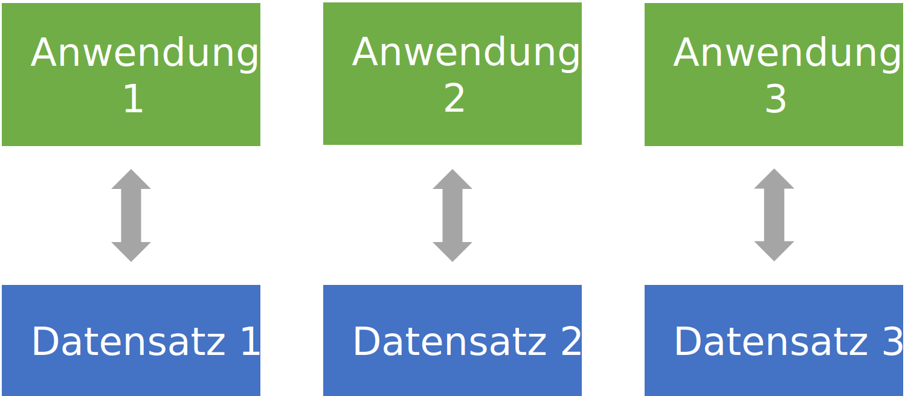
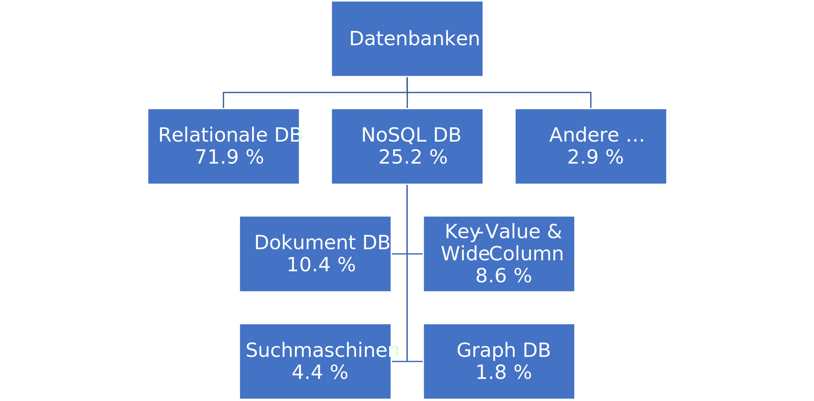

Database types#
Eventually, you have to throw the data over a wall.
— Pat Helland
Slides/PDF#
Fundamentals and Definitions#
In many software solutions, the data to be managed are so large that it is no longer efficient to manage them in files. Instead, they are stored in databases. Databases allow different applications to access the same data concurrently without conflicts. They can manage very large data volumes and organize them into structured formats. Databases are defined as follows:
A Database (DB) refers to the logically related data that are managed by a DBMS (Database Management System).
A database and a DBMS together are referred to as a Database System.
A database comprises all logically related data that are managed by a database management system. The database system denotes the combination of database and DBMS. In addition to the actual user data, the database includes all administrative objects such as indexes and log files that the system needs for efficient management. Long-term storage is ensured through persistence, while indexing enables fast search operations. Transactions ensure safe data changes, and logs document all operations in a traceable manner.
For engineers this means, for example, that project data, cost estimates, and schedules can be centrally managed, with multiple team members able to work concurrently without data inconsistencies arising.
File-Based Systems versus Databases#
In file-based systems, each application structures its data independently according to its own requirements. This often leads to redundancies and inconsistencies, as the same information is stored in multiple formats. Databases solve this problem with a unified data structure that all applications access. The DBMS coordinates all accesses and ensures that changes are synchronized and logged.
A practical example from civil engineering clearly shows the difference: Traditionally, accounting might manage cost data in Excel, while project management maintains separate schedules in specialized software. In a database-based approach, both access the same central data source, which automatically produces consistent and up-to-date reports on project costs and progress.


Codd’s Rules#
Edgar Codd defined nine fundamental principles for database systems. His motivation was to define clear, verifiable criteria that databases must satisfy. From this examination he derived precise rules designed to ensure that a system consistently implements data integrity, data independence, and declarative access.
Integration: unified, non-redundant data management
Operations: Storing, Searching, Updating
Catalog: Access to database descriptions in the data dictionary
User Views: Each user sees only the data they are permitted to view, in the way they want to view it
Integrity Assurance: Correctness of the database contents
Data Security: Prevention of unauthorized access; only authorized users
Transactions: multiple database operations as a single unit (all or nothing)
Synchronization: coordinating concurrent transactions
Data Recovery: Restoring data after system failures
Database Types#
Over the decades, different database types have emerged that are particularly well suited for different kinds of data and applications.

Relational Databases#
Relational database management systems have dominated since the 1980s and are based on the tabular data model. Each table has a fixed schema with defined columns and data types. This strong structuring makes relational databases ideal for well-structured business data.
SQL serves as the standard language for all database operations. A typical application is a project database with tables for projects, employees, materials, and costs, where complex queries such as “all projects that are over budget and have a duration of more than six months” are easily realizable.
Popular systems: Oracle, MySQL, Microsoft SQL Server, PostgreSQL, IBM Db2
NoSQL Databases#
NoSQL systems dispense with the relational data model and have grown in importance since 2009. They emerged in response to the challenges of modern web applications that require high scalability, fault tolerance, and the processing of big data. Their ability to handle semi-structured data such as JSON, which cannot be squeezed into a rigid tabular schema, is particularly important.
Popular systems: MongoDB, CouchDB, Cassandra, Redis, Neo4j, Amazon DynamoDB, HBase, OrientDB
Document-oriented Databases#
Document stores offer maximum flexibility through schema-free organization. Documents can have completely different structures; fields can contain different data types or even include arrays. Nesting enables hierarchical data structures, usually represented in JSON format.
For environmental engineers, this is especially valuable for documenting environmental samples, where different sites may have different measurement parameters. One aquatic site could measure pH, temperature, and dissolved oxygen, while another site also records heavy metal concentrations. Each site can map its specific data structure in the document-oriented database.
Popular systems: MongoDB, Amazon DynamoDB, Databricks, Azure Cosmos DB, Couchbase
Key-Value Databases#
Key-Value Stores work similarly to Python dictionaries and store simple key-value pairs. Their simplicity makes them attractive for resource-constrained systems like embedded PCs and for rapid development of web interfaces. They are particularly suitable for caching applications and session management.
In smart-building systems, sensor data can be stored efficiently as key-value pairs. A temperature sensor in Room 101 would store the current value under the key “Sensor_Room_101_Temperature”, enabling quick access for building control.
Popular systems: Redis, Amazon DynamoDB, Azure Cosmos DB, Memcached, Hazelcast
Search Engine Databases#
These specialized NoSQL systems are optimized for searching text content. They support complex search terms with boolean operators, perform full-text searches, and can stem words to their root forms. The results are sorted by relevance and can be grouped, with the search distributed across multiple servers.
Environmental agencies benefit particularly from such systems when they need to make thousands of assessments, reports, and studies searchable. A search query for groundwater contamination in industrial areas would find all relevant documents and rank them by their relevance to the specific question.
Popular systems: Elasticsearch, Splunk, Solr, OpenSearch, MarkLogic
Graph databases#
Graph databases model data as a network of nodes and edges, making them ideal for analyzing relationships. They enable network analyses, the modeling of social structures, and the development of recommender systems.
In construction projects, graph databases can map the complex dependencies between infrastructure elements. In an urban redevelopment, nodes would represent streets, buildings, and utility lines, while the connections would represent the dependencies between the renovation tasks. This enables optimal planning of the sequence of work.
Selection Criteria for Database Types#
The choice of the appropriate database type depends on several factors. Structured data with clearly defined relationships is well suited for relational databases, while flexible or evolving data structures favor NoSQL solutions. Scaling requirements play an important role, as does the complexity of the queries required.
Modern infrastructure projects often use multiple database types simultaneously. A Smart City project could combine relational databases for administrative data, graph databases for traffic-flow analyses, key-value stores for sensor caching, and search-engine databases for document management.